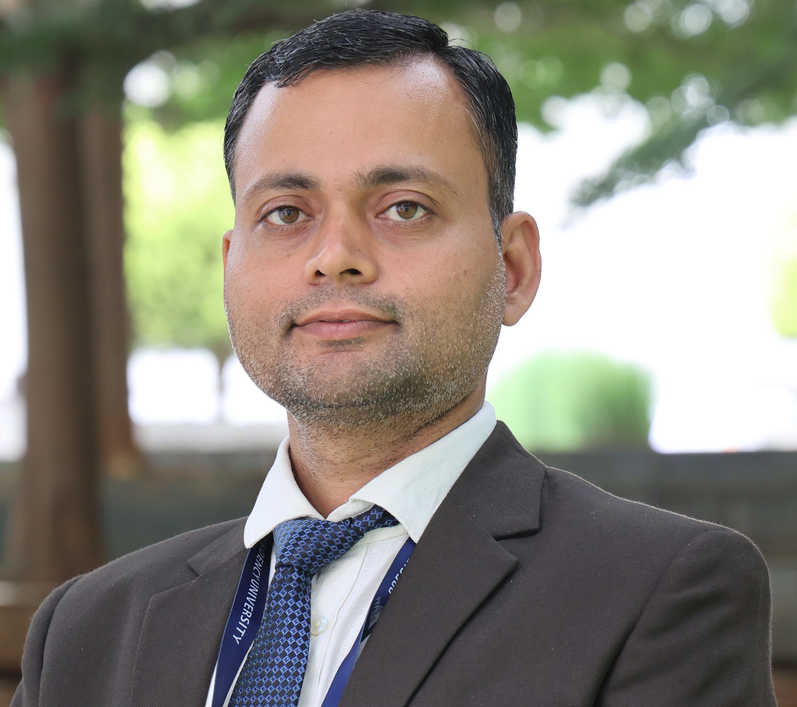

Presidency University, Bengaluru, India
Contact MeI am an Assistant Professor in the Department of Mechanical Engineering at Presidency University, Bengaluru. My research interests focus on advanced metallic materials, particularly High Entropy Alloys (HEAs), Refractory High Entropy Alloys (RHEAs), powder metallurgy, computational materials science, and alloy design using CALPHAD and Density Functional Theory (DFT).
I obtained my Masters and PhD in Metallurgical Engineering from IIT (BHU) Varanasi. My research integrates experimental materials development with computational approaches for aerospace, automotive, and biomedical applications.
Design, development and characterization of advanced HEAs and RHEAs.
DFT, CALPHAD, ATAT, Phonopy and thermodynamic modeling.
Mechanical alloying, sintering and advanced powder processing techniques.
Lightweight and oxidation-resistant alloys for extreme environments.
Design and Development of Refractory High Entropy Alloys for Automotive Applications
Funding: ₹10 Lakhs
Classification of Heat Affected Zone upon Grinding of AlSi52100 Bearing Steel through Deep Learning Based Semantic Segmentation Technique
Funding: ₹10 Lakhs
Name: Dr. Vivek Kumar Pandey
Position: Assistant Professor
Department: Mechanical Engineering
Institution: Presidency University, Bengaluru
Email: vivekkumar@presidencyuniversity.in
Google Scholar: https://scholar.google.com/citations?user=2QWIBLEAAAAJ&hl=en
ORCID: https://orcid.org/0000-0002-2819-4607
ResearchGate: https://www.researchgate.net/profile/Vivek-Pandey-48?ev=hdr_xprf
LinkedIn: Add Link